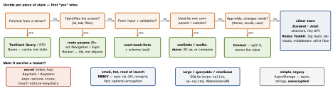

react-native · folio
In one line: “Which state library?” is the wrong question. Classify first — server, navigation, local UI, shared client, form, persisted (secret?) — each has a best-fit tool; most bugs are one kind kept in another’s tool.
Download PDF Print view LaTeX source


Server state — TanStack Query (v5)
- Cache keyed by
queryKey(['todo', id]); dedupes requests; stale-while-revalidate: show cached, refetch behind. staleTime(default 0) — how long data is fresh (no refetch on mount/focus).gcTime(default 5 min; v4cacheTime) — how long an unused entry stays in memory.invalidateQueriesafter a mutation: mark stale, refetch active.retry: 3, exponential backoff.- RN wiring:
focusManager←AppState,onlineManager← NetInfo. Offline, queries pause; persist the cache withPersistQueryClientProvider. - RTK Query: the same inside Redux —
createApi,providesTags/invalidatesTags.
Example — optimistic update with rollback
const qc = useQueryClient();
const save = useMutation({
mutationFn: (t: Todo) => api.update(t),
onMutate: async (t) => {
await qc.cancelQueries({ queryKey: ['todos'] }); // no race
const prev = qc.getQueryData<Todo[]>(['todos']);
qc.setQueryData<Todo[]>(['todos'], (old = []) =>
old.map((x) => (x.id === t.id ? t : x)));
return { prev }; // -> ctx
},
onError: (_e, _t, ctx) => qc.setQueryData(['todos'], ctx?.prev),
onSettled: () => qc.invalidateQueries({ queryKey: ['todos'] }),
});Context vs stores — re-render mechanics
- Context re-renders every consumer when the value identity changes — no selectors. Low-frequency values only; split state from dispatch,
useMemothe value. - Redux Toolkit:
createSlice(reducers “mutate” a draft, Immer makes the immutable copy),configureStore,createAsyncThunk.useSelectorre-renders when its result changes by reference; derive with memoisedcreateSelector. - Zustand:
create(fn), no provider;useStore(selector)subscribes to one slice; object selectors needuseShallow;persistmiddleware. - Jotai: atoms, bottom-up; derived atoms re-run only for their readers.
Forms
react-hook-form: values live outside React state — a keystroke does not re-render the form; RN inputs go through Controller; validate with a zod resolver.
Persistence — beyond the picture
- AsyncStorage on Android is SQLite with a default size cap(unverified); MMKV’s sync reads let settings load at launch without a spinner — its encryption key belongs in the Keychain. Secure stores hold small values (tokens), not data.
- Persist client state selectively and version + migrate its shape.
Offline-first & normalisation
- Local DB is the source of truth; the UI reads it; sync is background.
- Writes go to an outbox, replayed on reconnect with idempotency keys (a retried POST must not double-charge).
- Conflict rule per entity: last-write-wins, server-wins, or field merge.
- Normalise shared entities (
{ids, entities}, RTKcreateEntityAdapter): one update reaches every screen. Query caches are per key, not normalised —setQueryDataor invalidate.
Traps
- Copying fetched data into Redux/
useState: two sources of truth, stale forever. Server state belongs in the query cache. - Tokens in AsyncStorage (plain file/SQLite) — use Keychain/Keystore.
staleTime: 0+ many mounts = refetch storms;gcTimeis not freshness.useStore()without a selector re-renders on every change.- Whole objects as route params — stale copies, broken deep links.
Remember
Server → query cache · screen → route · local → useState · rare global → Context · hot shared → store · secret → Keychain.